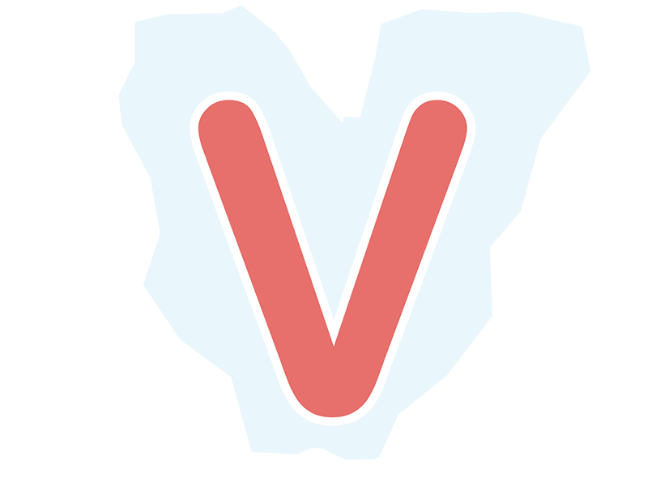

Bộ gõ tiếng Việt nguồn mở
Bộ gõ tiếng Việt mới, loại bỏ lỗi gạch chân khó chịu của macOS hay IBus, không bị loạn chữ. Hoàn toàn miễn phí và là nguồn mở, luôn cập nhật và phát triển, thân thiện với developer.

$ /usr/bin/ruby -e "$(curl -fsSL https://raw.githubusercontent.com/Homebrew/install/master/install)"$ brew cask info openkey$ brew cask install openkey$ brew cask upgrade openkey